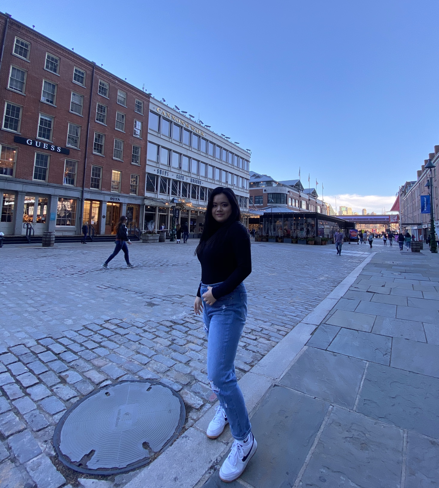
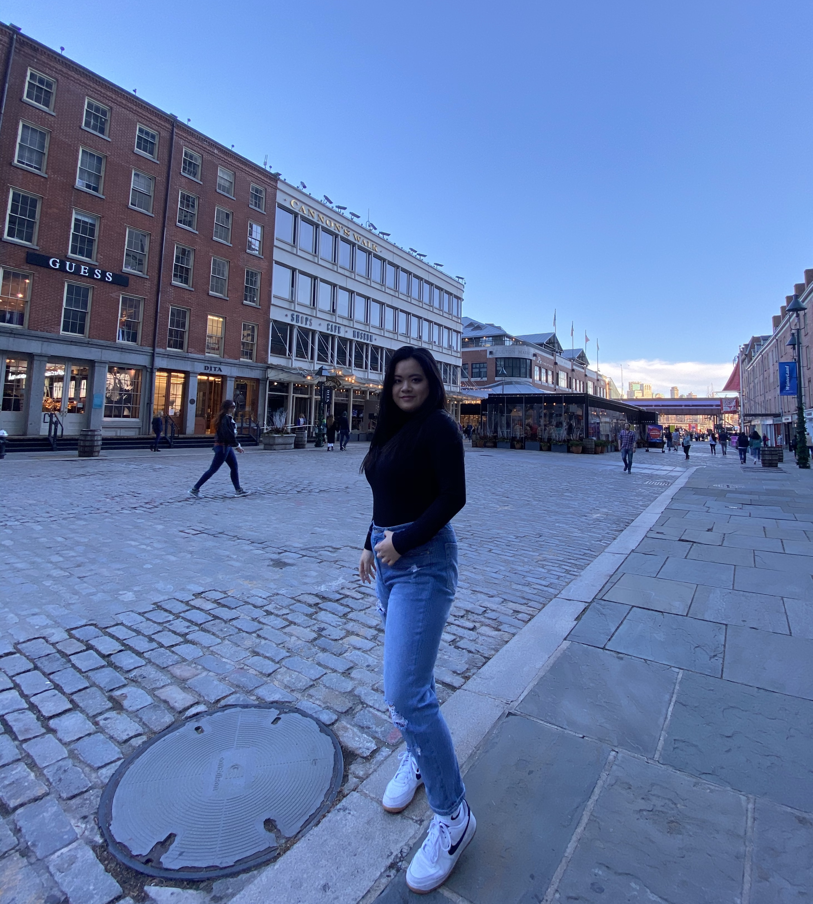

About Me
My name is Gina Huang, I am currently 21 years old and I have lived in New York City my entire life! I grew up in Elmhurst, Queens and I live with my two grandparents, older brother and a bunch of uncles, aunts and cousins. I attended Forest Hills High School, graduating in 2018, and now I am currently a senior at Babson College which is located in Wellesley, MA. At Babson, I am concentrating in Marketing and Business Analytics because I am passionate about creating effective and compelling marketing content as well as learning more about the data driven decisions behind it. Alongside this, I also enjoy learning about new cultures especially having grown up in such a diverse environment like New York City. On days where I do venture out of my predominantly Asian neighborhood in Queens, I can always find myself surrounded by fascinating architecture, from modest co-ops in pre-war buildings to Tudor mansions in Forest Hills. Every so often, I visit the heart of New York City: Times Square which is like a Piccadilly Circus in London, with its junctions of streets and crowds with the backdrop of high-rise buildings, skyscrapers and digital billboards that tower over you. I truly appreciate the heterogeneity New York City offers and in some instances, I’m reminded of how we, as New Yorkers, believe in and embrace a diverse and inclusive environment, mitigating the possibility of anyone feeling isolated or ostracized. New York City is truly that one place that serves as its own universe, offering one planet after another for so many people to explore with their friends and family!

After completing my undergraduate education, I hope to work alongside a company that allows me to continuously grow both professionally and personally. I hope to continue pursuing marketing and data analytics as well as expand my network and collaborate with individuals that share similar interests. I plan to stay committed to my industry of interest and work at a firm to hold an executive position specifically as Chief Marketing Officer. Once reaching this goal, I plan on leveraging my platform with this position to implement valuable and meaningful experiences to younger individuals and invest in them earlier on. I aspire to give back to communities that have allowed me to reach my potential through establishing mentorship programs. My goal is to promote education to our youth and spread the wealth of knowledge, encouraging them to strive for their goals and pursue their passions. Once executing my entrepreneurial idea, I aim to create a diverse and inclusive space for students who come from similar backgrounds as I do. My hopes are that generations from here on out are aided with the resources for success regardless of their socioeconomic status. Alongside this, I want to integrate my passion for traveling alongside my work as I truly value a global perspective. By creating the foundation for these opportunities domestically, I plan on marketing the program on a global scale. I would hope my work can bring along experiences outside of the United States to create a legacy of entrepreneurship, education and innovation.
 
